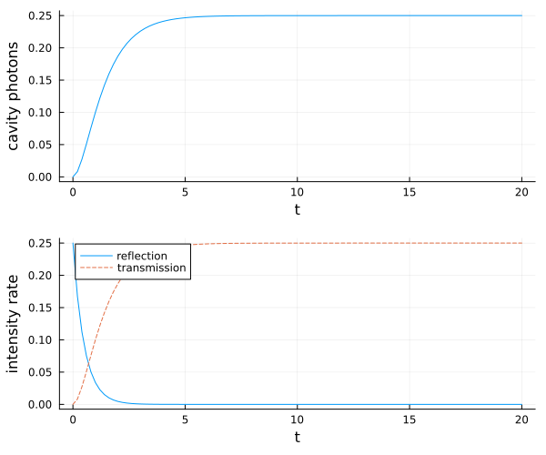
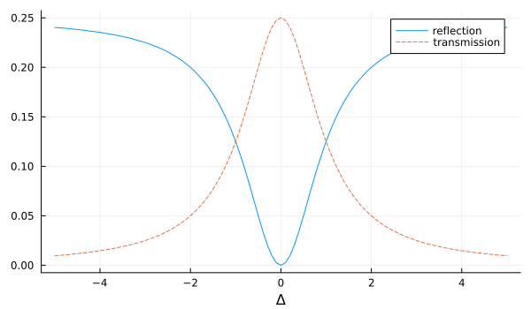
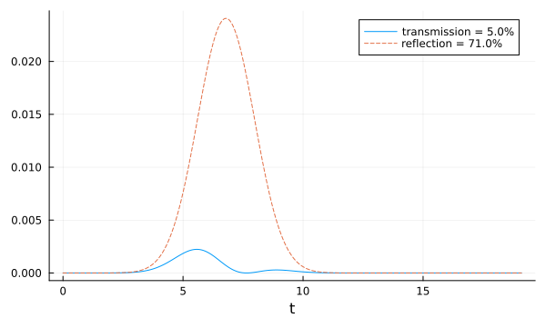

Mean-field Two-sided Cavity
Here we show how to solve the dynamics of the example Two-sided Cavity with Atoms in the Heisenberg picture with a higher-order mean-field approach (cumulant expansion), which is done with the package QuantumCumulants.jl.
using QuantumInputOutput
using SecondQuantizedAlgebra
using QuantumCumulants
using ModelingToolkitBase
using OrdinaryDiffEq
using QuantumOpticsBase
using QuantumOpticsBase: dagger
using Plots@variables E::Real κ_L::Real κ_R::Real Δ::Real g::Real γ::Real
Natoms = 2
hc = FockSpace(:cavity)
ha(i) = NLevelSpace(Symbol("a_$i"), 2)
h = hc ⊗ tensor([ha(i) for i = 1:Natoms]...);
a = Destroy(h, :a, 1) # cavity
σ(α, i, j) = Transition(h, Symbol("σ_$(α)"), i, j, 1+α) # two-level atom α
∑σ(i, j) = sum(σ(α, i, j) for α = 1:Natoms) # collective atomic operatorEmpty two-sided cavity
We couple a classical drive into the cavity through the left mirror $(\kappa_L)$. The decay through the right mirror can be added in several ways: with the concatenate rule, including it already in the initial cavity SLH triple or by simply including the decay term to the Lindblad by hand. In this example, we use the first option.
G_d = SLH(1, E, 0) # classical drive
H_cavity = -Δ*a'a
G_c_L = SLH(1, [√(κ_L)*a], H_cavity)
G_cav_L_drive = G_d ▷ G_c_L
G_c_R = SLH(1, [√(κ_R)*a], 0)
G_cav_L_R_drive = G_cav_L_drive ⊞ G_c_RNote that one needs to be careful to not double-count the Hamiltonian terms with the concatenation rule.
H1 = hamiltonian(G_cav_L_R_drive)\[0.5 ~ E ~ \sqrt{\mathtt{\kappa_{L}}} ~ \mathit{i} a - 0.5 ~ E ~ \sqrt{\mathtt{\kappa_{L}}} ~ \mathit{i} a^{\dagger} - \Delta a^{\dagger}a\]
L1_L = jump_operator(G_cav_L_R_drive)[1]\[E + \sqrt{\mathtt{\kappa_{L}}} a\]
L1_R = jump_operator(G_cav_L_R_drive)[2]\[\sqrt{\mathtt{\kappa_{R}}} a\]
The typical cavity drive-term $\sqrt{\kappa_L} E (a^\dagger + a)$ is a combination of Hamiltonian term and Lindblad. We use the function meanfield to obtain the equation for the intra-cavity field, which leads to a closed set of equations in this particular case.
eqs_a = meanfield([a], H1, [L1_L, L1_R])
complete!(eqs_a)\[\begin{align} \frac{d}{dt} \langle a\rangle &= 1 i \Delta \langle a\rangle -1.0 \sqrt{\kappa{L}} E -0.5 \left( \left( \sqrt{\kappa{L}} \right)^{2} + \left( \sqrt{\kappa_{R}} \right)^{2} \right) \langle a\rangle \end{align}\]
We defined the numerical parameters and the initial state of the system, create the ODE problem and solve the dynamics.
# numerical parameters
En = 0.5
κ_Rn = 1.0
κ_Ln = 1.0
Δn = 0.0
Δn_ls = [-5.0:0.1:5.0;];
lΔ=length(Δn_ls)
p_sym = [E, κ_R, κ_L, Δ]
p_num = [En, κ_Rn, κ_Ln, Δn]
dict_p1 = Dict(p_sym .=> p_num)
# initial state
u0 = [0.0im]# numerical system
T = [0:0.01:1;]*20
sys_a = mtkcompile(System(eqs_a; name = :sys_a))
dict = merge(Dict(p_sym .=> p_num), initial_values(eqs_a, u0))
prob_a = ODEProblem(sys_a, dict, (0.0, T[end]))sol_a = solve(prob_a, Tsit5(); saveat = T)n_cavity = abs2.(get_solution(sol_a, a, eqs_a).(T))
n_ref = abs2.(√(κ_Ln) .* get_solution(sol_a, a, eqs_a).(T) .+ En)
n_trans = abs2.(√(κ_Rn) .* get_solution(sol_a, a, eqs_a).(T))p1 = plot(T, n_cavity; label = "", xlabel = "t", ylabel = "cavity photons", grid = true)
p2 = plot(T, n_ref; label = "reflection")
plot!(p2, T, n_trans; label = "transmission", ls = :dash)
plot!(p2; xlabel = "t", ylabel = "intensity rate", grid = true, legend = :best)
plot(p1, p2; layout = (2, 1), size = (600, 500))
Now we scan the laser-cavity detuning $\Delta$ to plot the transmission and reflection spectrum.
dict_p_Δ(Δn) = merge(Dict(p_sym .=> [En, κ_Rn, κ_Ln, Δn]), initial_values(eqs_a, u0))
n_ref_Δ = zeros(lΔ)
n_trans_Δ = zeros(lΔ)
for it = 1:lΔ
Δn_ = Δn_ls[it]
prob_ = ODEProblem(sys_a, dict_p_Δ(Δn_), (0.0, T[end]))
sol_ = solve(prob_, Tsit5(); saveat = T)
n_ref_Δ[it] = abs2(√(κ_Ln) * get_solution(sol_, a, eqs_a)(T[end]) + En)
n_trans_Δ[it] = abs2(√(κ_Ln) * get_solution(sol_, a, eqs_a)(T[end]))
endp = plot(Δn_ls, n_ref_Δ; label = "reflection")
plot!(p, Δn_ls, n_trans_Δ; label = "transmission", ls = :dash)
plot!(p; xlabel = "Δ", grid = true, legend = :best, size = (600, 350))
p
Two-sided cavity with atoms
In the following, we include $N=2$ two-level atoms in the cavity and simulate the transmission and reflection of a coherent Gaussian pulse with a mean photon number of $|\alpha|^2 = 1/10$. We assume that the atoms are on resonance with the cavity, i.e. $\Delta = \Delta_c = \Delta_a$.
Define the ModelingToolkit independent variable and register the classical drive as a function of it.
@independent_variables t
@register_symbolic Et(tt)
G_d_t = SLH(1, Et(t), 0)
H_ac = -Δ*(a'a + ∑σ(2, 2)) + g*(a'∑σ(1, 2) + a*∑σ(2, 1))
G_ac = SLH(1, √κ_L*a, H_ac)
G_ac_drive = (G_d_t ▷ G_ac) ⊞ SLH(1, √κ_R*a, 0)H2 = G_ac_drive.hamiltonian\[0.5 ~ \mathrm{Et}\left( t \right) ~ \sqrt{\mathtt{\kappa_{L}}} ~ \mathit{i} a - 0.5 ~ \mathrm{Et}\left( t \right) ~ \sqrt{\mathtt{\kappa_{L}}} ~ \mathit{i} a^{\dagger} - \Delta {\sigma_{\mathrm{1}}}^{{22}} - \Delta {\sigma_{\mathrm{2}}}^{{22}} + g a{\sigma_{\mathrm{1}}}^{{21}} + g a{\sigma_{\mathrm{2}}}^{{21}} - \Delta a^{\dagger}a + g a^{\dagger}{\sigma_{\mathrm{1}}}^{{12}} + g a^{\dagger}{\sigma_{\mathrm{2}}}^{{12}}\]
L2_L = G_ac_drive.jump_operator[1]\[\mathrm{Et}\left( t \right) + \sqrt{\mathtt{\kappa_{L}}} a\]
L2_R = G_ac_drive.jump_operator[2]\[\sqrt{\mathtt{\kappa_{R}}} a\]
We derive the equations of motion for system with a second-order mean-field approximation.
J_add = [√(γ)*σ(α, 1, 2) for α = 1:Natoms]
eqs2 = meanfield([a'a, σ(1, 2, 2)], H2, [L2_L, L2_R, J_add...]; order = 2)\[\begin{align} \frac{d}{dt} \langle a^\dagger a\rangle &= -1 i g \langle a^\dagger {\sigma1}^{{12}}\rangle + \langle a^\dagger a\rangle \left( -1.0 \left( \sqrt{\kappa{L}} \right)^{2} -1.0 \left( \sqrt{\kappa{R}} \right)^{2} \right) -1 i g \langle a^\dagger {\sigma2}^{{12}}\rangle + 1 i \langle a {\sigma2}^{{21}}\rangle g -1.0 \sqrt{\kappa{L}} \langle a\rangle \mathrm{Et}\left( t \right) -1.0 \sqrt{\kappa{L}} \langle a^\dagger\rangle \mathrm{Et}\left( t \right) + 1 i g \langle a {\sigma1}^{{21}}\rangle \\ \frac{d}{dt} \langle {\sigma1}^{{22}}\rangle &= 1 i g \langle a^\dagger {\sigma1}^{{12}}\rangle -1.0 \left( \sqrt{\gamma} \right)^{2} \langle {\sigma1}^{{22}}\rangle -1 i g \langle a {\sigma1}^{{21}}\rangle \end{align}\]
eqs2_c = complete(eqs2)
length(eqs2_c)18Again, we defined the numerical parameters and the initial state of the system, create the ODE problem and solve the dynamics.
# numerical parameter
κ_Rn2 = κ_Ln2 = 2π*1
gn2 = 2π*0.4
Δn2 = 0.0
γn = 2π*0.1
p_sym2 = [κ_R, κ_L, Δ, g, γ]
p_num2 = [κ_Rn2, κ_Ln2, Δn2, gn2, γn]
σp = 10/κ_Ln2 # pulse width
Tp = 4σp # pulse peak
Tend = 3Tp
α0 = √(0.1) # √ of total photon number
Ω0 = α0*2*√(κ_Ln2)/(π^(1/4)*√(σp))
Ω1(t) = Ω0/2*exp(-(t-Tp)^2 / (2*σp^2))
Et(t) = Ω1(t)/√(κ_Ln2)
T2 = [0:0.001:1;]*Tend
ΔT = T2[2] - T2[1]
n_pulse = round(sum(abs2.(Et.(T2)))*ΔT, digits = 7)
@show n_pulse
dict_p2 = Dict(p_sym2 .=> p_num2)n_pulse = 0.1# initial state
bc1 = FockBasis(4)
ba = NLevelBasis(2)
b = bc1 ⊗ tensor([ba for i = 1:Natoms]...)
ψ0 = LazyKet(b, (fockstate(bc1, 0), [nlevelstate(ba, 1) for i = 1:Natoms]...))
u0_2 = initial_values(eqs2_c, initial_values(eqs2_c, ψ0)) # state -> vector -> u0 dictsys2 = mtkcompile(System(eqs2_c; name = :sys2)) # initial state
dict2 = merge(Dict(p_sym2 .=> p_num2), u0_2)
prob2 = ODEProblem(sys2, dict2, (0.0, T2[end]))sol2 = solve(prob2, Tsit5(); saveat = T2)n_ref2 = abs2.(√(κ_Ln2) .* get_solution(sol2, a, eqs2_c).(T2) .+ Et.(T2))
n_trans2 = abs2.(√(κ_Rn2) .* get_solution(sol2, a, eqs2_c).(T2))
p = plot(
T2,
n_trans2;
label = "transmission = $(round(sum(n_trans2) * ΔT / n_pulse * 100))%",
)
plot!(
p,
T2,
n_ref2;
ls = :dash,
label = "reflection = $(round(sum(n_ref2) * ΔT / n_pulse * 100))%",
)
plot!(p; xlabel = "t", legend = :best, grid = true, size = (600, 350))
p
We can see that all results agree with the full quantum dynamics of the example Two-sided Cavity with Atoms, which means the second order cumulant expansion is good approximation here.
Package versions
These results were obtained using the following versions:
using InteractiveUtils
versioninfo()
using Pkg
Pkg.status(
[
"QuantumInputOutput",
"SecondQuantizedAlgebra",
"QuantumCumulants",
"ModelingToolkitBase",
"OrdinaryDiffEq",
"QuantumOpticsBase",
"Plots",
],
mode = PKGMODE_MANIFEST,
)Julia Version 1.13.0
Commit d1c37793dd2 (2026-09-09 19:00 UTC)
Build Info:
Official https://julialang.org release
Platform Info:
OS: Linux (x86_64-linux-gnu)
CPU: 4 × AMD EPYC 7763 64-Core Processor
WORD_SIZE: 64
LLVM: libLLVM-20.1.8 (ORCJIT, znver3)
GC: Built with stock GC
Threads: 4 default, 1 interactive, 4 GC (on 4 virtual cores)
Environment:
JULIA_PKG_SERVER_REGISTRY_PREFERENCE = eager
JULIA_DEBUG = Documenter
JULIA_NUM_THREADS = auto
Status `~/work/QuantumInputOutput.jl/QuantumInputOutput.jl/docs/Manifest.toml`
[47edcb42] ADTypes v1.24.0
[1520ce14] AbstractTrees v0.4.5
[79e6a3ab] Adapt v4.7.0
[4fba245c] ArrayInterface v7.30.1
[aae01518] BandedMatrices v1.12.0
[caf10ac8] BipartiteGraphs v0.1.14
[8e7c35d0] BlockArrays v1.10.0
⌅ [861a8166] Combinatorics v1.0.2
[38540f10] CommonSolve v0.2.14
[34da2185] Compat v4.18.1
[187b0558] ConstructionBase v1.6.0
[d38c429a] Contour v0.6.3
⌅ [82cc6244] DataInterpolations v9.5.0
[864edb3b] DataStructures v0.19.6
[2b5f629d] DiffEqBase v7.21.0
[459566f4] DiffEqCallbacks v4.19.3
[77a26b50] DiffEqNoiseProcess v5.36.3
[b552c78f] DiffRules v1.16.0
[a0c0ee7d] DifferentiationInterface v0.7.21
[ffbed154] DocStringExtensions v0.9.5
[5b8099bc] DomainSets v0.8.1
[4e289a0a] EnumX v1.0.7
[f151be2c] EnzymeCore v0.8.21
[e2ba6199] ExprTools v0.1.11
[c87230d0] FFMPEG v0.4.5
[7a1cc6ca] FFTW v1.10.0
[7868e603] FastExpm v1.1.0
[442a2c76] FastGaussQuadrature v1.3.0
[1a297f60] FillArrays v1.17.0
⌅ [53c48c17] FixedPointNumbers v0.8.6
[f6369f11] ForwardDiff v1.4.5
[069b7b12] FunctionWrappers v1.1.3
[77dc65aa] FunctionWrappersWrappers v1.13.0
[28b8d3ca] GR v0.73.27
[86223c79] Graphs v1.15.0
[3263718b] ImplicitDiscreteSolve v2.3.0
[8197267c] IntervalSets v0.7.14
[1019f520] JLFzf v0.1.11
[682c06a0] JSON v1.8.0
[ccbc3e58] JumpProcesses v9.32.3
[8ac3fa9e] LRUCache v1.6.2
[b964fa9f] LaTeXStrings v1.4.1
[23fbe1c1] Latexify v0.16.12
[1914dd2f] MacroTools v0.5.16
[442fdcdd] Measures v0.3.3
[7771a370] ModelingToolkitBase v1.69.1
⌅ [2e0e35c7] Moshi v0.3.9
[d8a4904e] MutableArithmetics v1.8.0
[77ba4419] NaNMath v1.1.4
[e7bfaba1] NumericalIntegration v0.3.4
[6fe1bfb0] OffsetArrays v1.17.0
⌅ [bac558e1] OrderedCollections v1.8.2
[1dea7af3] OrdinaryDiffEq v7.8.1
[6ad6398a] OrdinaryDiffEqBDF v2.4.7
[bbf590c4] OrdinaryDiffEqCore v4.17.0
[50262376] OrdinaryDiffEqDefault v2.6.0
[43230ef6] OrdinaryDiffEqRosenbrock v2.7.1
[b1df2697] OrdinaryDiffEqTsit5 v2.1.4
[79d7bb75] OrdinaryDiffEqVerner v2.4.1
[ccf2f8ad] PlotThemes v3.3.0
[995b91a9] PlotUtils v1.4.4
[91a5bcdd] Plots v1.41.7
[d236fae5] PreallocationTools v1.7.1
[aea7be01] PrecompileTools v1.3.4
[35bcea6d] QuantumCumulants v0.7.1
[18f9eda6] QuantumInputOutput v0.5.3 `~/work/QuantumInputOutput.jl/QuantumInputOutput.jl`
[5717a53b] QuantumInterface v0.4.4
[6e0679c1] QuantumOptics v1.2.9
[4f57444f] QuantumOpticsBase v0.5.15
[795d4caa] ReadOnlyDicts v1.0.1
[3cdcf5f2] RecipesBase v1.3.4
[01d81517] RecipesPipeline v0.6.12
[731186ca] RecursiveArrayTools v4.5.1
[189a3867] Reexport v1.2.2
[05181044] RelocatableFolders v1.0.1
[ae029012] Requires v1.3.1
[7e49a35a] RuntimeGeneratedFunctions v0.5.26
[9dfe8606] SCCNonlinearSolve v1.15.3
[0bca4576] SciMLBase v3.53.2
[a6db7da4] SciMLLogging v2.1.0
[431bcebd] SciMLPublic v1.3.0
[53ae85a6] SciMLStructures v1.10.5
[6c6a2e73] Scratch v1.3.0
⌅ [f7aa4685] SecondQuantizedAlgebra v0.11.0
[efcf1570] Setfield v1.1.2
[992d4aef] Showoff v1.1.1
[727e6d20] SimpleNonlinearSolve v2.14.3
[276daf66] SpecialFunctions v2.9.0
[90137ffa] StaticArrays v1.9.20
[1e83bf80] StaticArraysCore v1.4.4
[10745b16] Statistics v1.11.5
[2913bbd2] StatsBase v0.34.13
[5e0ebb24] Strided v2.6.4
[2efcf032] SymbolicIndexingInterface v0.3.55
[d1185830] SymbolicUtils v4.46.4
[0c5d862f] Symbolics v7.39.2
[ed4db957] TaskLocalValues v0.1.3
[8ea1fca8] TermInterface v2.0.0
[3a884ed6] UnPack v1.0.2
[1cfade01] UnicodeFun v0.4.1
[41fe7b60] Unzip v0.2.0
[2a0f44e3] Base64 v1.11.0
[ade2ca70] Dates v1.11.0
[f43a241f] Downloads v1.7.0
[b77e0a4c] InteractiveUtils v1.11.0
[8f399da3] Libdl v1.11.0
[37e2e46d] LinearAlgebra v1.13.0
[44cfe95a] Pkg v1.13.0
[de0858da] Printf v1.11.0
[3fa0cd96] REPL v1.11.0
[9a3f8284] Random v1.11.0
[9e88b42a] Serialization v1.11.0
[2f01184e] SparseArrays v1.13.0
[fa267f1f] TOML v1.0.3
[cf7118a7] UUIDs v1.11.0
Info Packages marked with ⌅ have new versions available but compatibility constraints restrict them from upgrading. To see why use `status --outdated -m`This page was generated using Literate.jl.